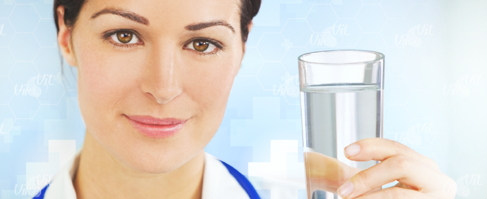
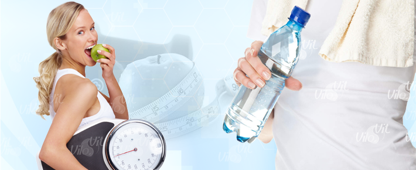
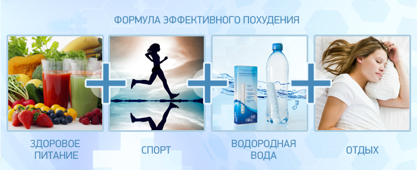
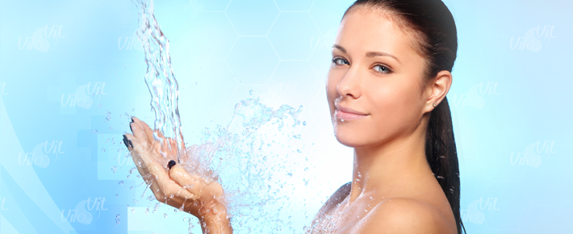
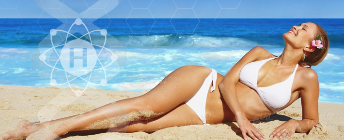

- главная
- похудение
+ 7 (495) 64-111-63
info@vilovit.ru
Стержень Виловит® Источник Вашего Долголетия!
Вода для похудения
Любой человек, сидевший на диете, знает: нужно выпивать в день не менее 2 литров воды. Но какая вода подходит для похудения, а какая нет?
Не рекомендуется: пить сладкую газировку и ледяную воду.
Самое простое решение: обычная кипяченая вода. Но, она не подходит для диетического питания т.к. ее структура безнадежно разрушена, а питательные вещества утеряны.
Мы рекомендуем использовать активированную воду насыщенную водородом с помощью стержня ВилоВит.
Потребление водородной воды усиливает биохимический процесс переработки жиров в организме и выводит шлаки из организма. Живая вода помогает бороться со свободными радикалами, способствует улучшению пищеварения и очищению кишечника. Результатом применения структурированной воды станет здоровый желудок и кишечник, а как следствие ваш вес начнёт заметно снижаться. Отзывы наших покупателей, уже принимавших её, можно прочитать в соответствующем разделе сайта.
Во время строгой диеты у вас не возникнет слабость, не появляется апатия потому, что «Водородная Вода» повышает работоспособность, активность и бодрость.
Водородная вода динамично участвует в процессе похудения:
- Активизирует пищеварительную систему, усиливает моторику кишечника, что способствует более качественному перевариванию пищи.
- Активно расщепляет жиры и ускоряет обмен веществ.
- Наука подтвердила, что водород является единственным элементом распознающим энергию организма. Он необходим для выработки жизненно важной АТФ (Аденозинтрифосфорной кислоты).
- Выводит токсины и помогает избавляться от излишков желчи и слизи, проходя через застойные явления желудочно-кишечного тракта.
- Защищает от вредных воздействий на желудок и печень, восстанавливая слизистую оболочку желудка и двенадцатиперстной кишки.
Как правильно пить воду
- В день нужно выпивать 1,5-2 литра водородной воды.
- По утрам натощак, употреблять водородную воду по 250-500г.
- Перед каждой трапезой выпивайте 1-2 стакана живой воды за 15-20 минут.
- После еды нельзя пить 1 час. И вот почему. Запивая пищу, мы разбавляем желудочный сок, тем самым процесс переваривания пищи растягивается, и еда может перевариться не до конца.
- Перекусы между приёмами пищи необходимо заменить на питье 1-2 стаканов живой воды. Хочешь есть — пей!
- Лучше водородную воду пить не залпом, а небольшими глоточками, наслаждаясь вкусом.
С чего начать похудение?
Мотивация
Как это не удивительно, начинать нужно со своей головы. Задумайся: зачем ты будешь худеть? Нужно ли это тебе на самом деле? Например, мне не нравятся мой живот, он висит. Цель поставлена! Теперь необходимо поставить себе сроки для достижения цели: похудеть к июлю (еду на море). Когда есть мощная мотивация и дата, к которой нужно стремиться, можно начинать.
Неправильное питание — некрасивая фигура
Запомни: Чтобы достичь результата, нужно упорно трудиться. Начинаем худеть с водородной водой и сразу забываем про чипсы, картошку фри, жирные пончики и сушёную рыбку с пивом. Морить голодом себя не стоит. Ни к чему хорошему это не приведёт, потому что для нормальной работы организма необходимы различные питательные вещества. Едим всё, но в меньшем количестве. Перед едой за 30 мин. и в перерывах между приёмами пищи пьём структурированную воду. Она поможет быстрее очистить организм и улучшит обмен веществ.
Движение это жизнь
ККогда мы привели свою голову и питание в норму, можно (и нужно) приступать к активным тренировкам. Помни: жир уйдёт и оставит после себя обвисшую кожу. А это очень некрасиво. Не допусти этого! Физическую нагрузку выбираем на свой вкус: спортзал, танцы, борьба, йога. Занимаемся регулярно, постепенно увеличивая нагрузки. И результаты не заставят себя долго ждать!
После достижения результата не бросаем тренировки и не набрасываемся на жирный узбекский плов. Над собой нужно работать постоянно, ведь нет предела совершенству!
Водородная вода (вода для похудения) нормализует пищеварение, ускоряет обмен веществ, обновляет клетки, расщепляет жиры и способствует выводу отработанных веществ и токсинов. Все это положительно влияет на процесс похудения и омоложения организма.
Омоложение Водородной водой
Желание иметь здоровую, упругую и молодо выглядящую кожу без морщин, возникло еще в первобытные времена. Одним из путей (который все еще используется и сегодня), для достижения этого эффекта - является практика купания в минеральных водах. Такие ванны имеют широкое использование в терапевтических целях.
Было проведено исследование - проверка минеральной воды на восстановительные особенности (скорее всего из-за содержания растворенного молекулярного водорода). Результаты показали, что купание в водородной воде уменьшило потенциал сокращения окисления (ОВП) человеческой кожи.
Это было важным наблюдением, так как у здоровой кожи наблюдаются те самые окислительные повреждения (от солнца), в результате которых кожа стареет.
Эти соотношения между окислительно-восстановительными потенциалами кожи и старением были исследованы более подробно и показывают, что такие воды понижают окисление и тем самым старение кожи.
Купание в такой воде не только уменьшило окисление кожи, но так же улучшило ее эластичность. Кроме того, при ближайшем рассмотрении волос, вода прибавила им блеска.
Другое исследование показало, что Водород стимулирует синтез коллагена (белок, из которого состоит кожа человека на 80%). А при потере коллагена на коже возникают морщины. Именно поэтому производители косметики добавляют в средства для ухода за кожей либо сам коллаген (животного происхождения) либо вещества, стимулирующие его выработку.
Мы предлагаем вам запустить процесс омоложения водородной водой, который позволит вашему организму самому синтезировать коллаген в необходимом количестве. Вам необходимо всего лишь наносить водородную воду на кожу лица и поврежденные участки тела. С водородной водой Ваша кожа вновь становится упругой, гладкой, нежной и защищенной. Уходят сыпи, разглаживаются морщины.
Загар и водород
Исследование показывает, что люди, омывающиеся водородной водой в течение трех месяцев, в значительной степени избавляются от морщин на коже. Авторы пришли к заключению, что водородная вода могла бы служить ежедневным уходом за кожей, чтобы подавить повреждение кожи, вызванное окислением и УФ лучами (очищая свободные радикалы и способствуя синтезу коллагена).
Далее это было утверждено в другой статье, где водородная вода была очень полезна при специально вызванном повреждении клеток кожи ультрафиолетовыми лучами. Исследование показало, что коллаген 1 типа синтезировался вдвое больше в клетках, соприкасавшихся с водородной водой. Это даже предотвратило повреждение ДНК, некроз клеток и уменьшило уровень внутриклеточных свободных радикалов.
Другая группа исследователей давала лысым мышам солнечные ванны для загара. Одну группу мышей они купали в водопроводной воде, а другую в водородной. Шкура мышей, принимавших водородные ванны, показала более низкие индексы повреждения кожи и более низкий воспалительный уровень цитокина.
Другая группа исследователей выполнила подобный эксперимент и выявила, что купание мышей в водородной воде уменьшило уровень повреждения кожи, увеличило деятельность антиокислительной пероксидазы глутатиона, понизило цитокины и предотвратило изменения кожи. Тем самым, можно предположить, что водородная вода может защитить от повреждения кожных клеток ультрафиолетовыми лучами.